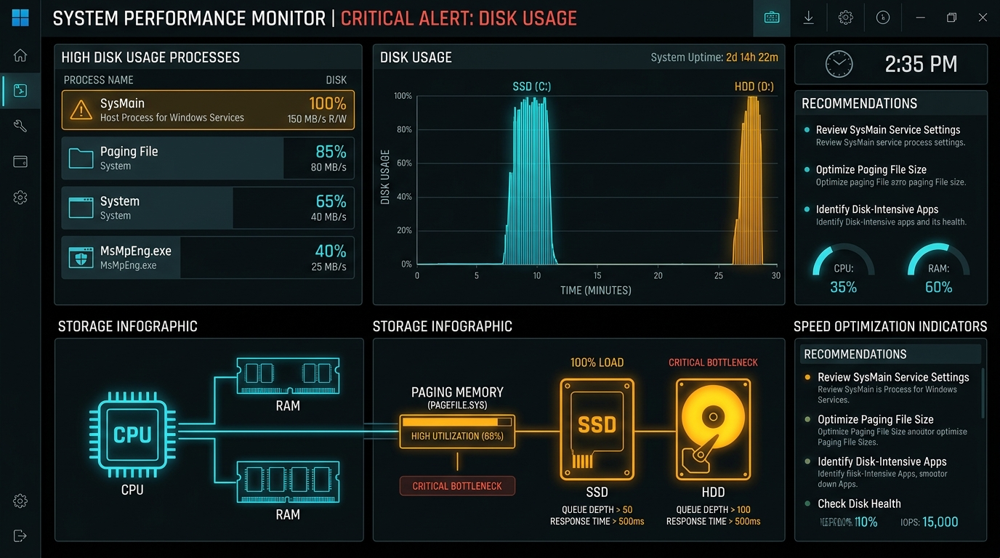

How to Fix 100% Disk Usage on Windows 11 & Windows 10 (2026 Guide)
Diagnose the root cause of extreme PC sluggishness, frozen cursors, and Task Manager disk spikes with tested system engineering methods.

You press Ctrl + Shift + Esc to open Task Manager because your computer has slowed to a crawl. The mouse cursor stutters, folders take ten seconds to open, and applications randomly freeze with "(Not Responding)". In Task Manager, your CPU and RAM usage are completely normal at 20% or 30%—but the Disk column is pinned at an alarming, solid 100% in bright orange or red.
Even more confusing: the total read/write throughput might only be 0.5 MB/s or 2 MB/s, yet Windows insists your drive is fully saturated. At Eebii, our workstation engineers see this issue constantly on business laptops and desktop workstations. Here is the technical explanation for why this happens and how to permanently eliminate it.
The Technical Truth: Active Time vs. Transfer Speed
The percentage shown in Task Manager is Active Time, not transfer speed. Active time measures the percentage of elapsed time during which the storage drive is actively handling read or write requests:
- If a program requests 500 small 4KB files, and the drive controller takes 1,000 milliseconds (1 second) to fulfill those requests due to high queue depth, the active time is 100%, even though only 2MB of actual data moved.
- When Average Response Time exceeds 500ms to 2,000ms, the operating system kernel is waiting on the storage controller, which causes the entire Windows user interface to freeze.
Solution 1: Disable the "SysMain" (Superfetch) Service
In modern versions of Windows 11 and 10, the single most common cause of sustained 100% disk usage is a background service named SysMain (historically known as Superfetch).
SysMain was originally engineered for spinning mechanical hard drives (HDDs) to preload frequently used software into RAM during idle periods. However, on modern SATA and NVMe solid-state drives (SSDs), SysMain frequently enters an unthrottled index-and-read loop that bombards the drive with non-stop random read operations.
How to Disable SysMain Instantly:
- Press
Win + R, typeservices.msc, and hit Enter. - Scroll down through the services list and find SysMain.
- Right-click SysMain and select Properties.
- Click the Stop button to halt current disk thrashing immediately.
- Set Startup type to Disabled.
- Click Apply and OK.
REM Or execute via Admin Command Prompt:net stop "sysmain"sc config "sysmain" start=disabled
Within 30 seconds of stopping SysMain, Task Manager disk utilization will typically plummet from 100% down to under 5%.
Solution 2: Fix Corrupted Virtual Memory (pagefile.sys)
When your system runs low on physical RAM, Windows offloads memory blocks to a hidden file on your drive called pagefile.sys. If this virtual memory allocation becomes fragmented or corrupted, Windows enters an endless swapping loop that pins your disk at 100%.
How to Recalculate and Set Clean Virtual Memory:
- Press
Win + R, typesysdm.cpl, and press Enter to open System Properties. - Go to the Advanced tab, and under Performance, click Settings.
- In the Performance Options window, go to the Advanced tab and click Change... under Virtual memory.
- Uncheck: "Automatically manage paging file size for all drives".
- Select your C: drive, choose Custom size, and configure based on your physical RAM:
- Initial size (MB): 1.5 × your physical RAM (e.g., for 8GB RAM:
8 × 1024 × 1.5 = 12288 MB). - Maximum size (MB): 3 × your physical RAM (e.g., for 8GB RAM:
8 × 1024 × 3 = 24576 MB).
- Initial size (MB): 1.5 × your physical RAM (e.g., for 8GB RAM:
- Click Set, then click OK and restart your system.
Solution 3: Repair Corrupted System Files (DISM & SFC Sequence)
Corrupted Windows system binaries cause background worker processes (like TiWorker.exe and TrustedInstaller.exe) to repeatedly restart failed integrity checks, triggering massive disk queue bottlenecks.
Launch Command Prompt as Administrator and run the Microsoft Deployment Image Servicing and Management (DISM) tool followed by the System File Checker (SFC):
DISM.exe /Online /Cleanup-image /Restorehealthsfc /scannow
Why the order matters: Running sfc /scannow first is ineffective if the local component store is damaged. DISM downloads verified replacement system files directly from Microsoft’s update servers; SFC then uses those verified files to repair damaged local operating system binaries.
Solution 4: Disable Windows Search Indexer Temporarily
If your disk spikes to 100% specifically whenever you open File Explorer or create new files, the Windows Search Indexer (searchindexer.exe) may be caught in an infinite loop re-indexing corrupted files or email PST archives.
REM Test if Windows Search is the culprit:net stop "Windows Search"
If your disk usage drops immediately to normal levels, open the Start Menu, search for Indexing Options, click Advanced, and click Rebuild to regenerate a clean search index from scratch.
Solution 5: Fix the StorAHCI.sys MSI Driver Bug
Certain SATA and NVMe solid-state drives suffer from a documented firmware incompatibility with Microsoft’s default StorAHCI.sys inbox storage driver when Message Signaled Interrupts (MSI) mode is enabled.
When this glitch occurs, the drive controller fails to complete an input/output operation, the driver issues a hard hardware reset, and the entire system locks up at 100% disk usage for 30 to 60 seconds with 0 KB/s transfer activity.
- Open Device Manager (
devmgmt.msc). - Expand IDE ATA/ATAPI controllers, right-click the standard SATA AHCI Controller, and open Properties.
- Under the Driver tab, click Driver Details. If
storahci.sysis listed, you are using the default driver. - Install official chipset storage drivers from your motherboard or laptop manufacturer (e.g., Intel Rapid Storage Technology or AMD RAID/SATA drivers) to replace the generic inbox driver.
Solution 6: Mechanical HDD vs. Modern NVMe SSD
If your laptop or PC is running Windows 11 on a traditional mechanical spinning hard disk drive (5400 RPM or 7200 RPM HDD), 100% disk usage is fundamentally inevitable.
Modern operating systems are engineered with hundreds of background telemetry, security scanning, and asynchronous update threads that demand high random 4K read/write IOPS. An HDD delivers roughly 80 to 120 IOPS, while a basic NVMe SSD delivers over 300,000 IOPS. Upgrading your boot drive to an SSD is the single most cost-effective hardware improvement for any business workstation.
Summary Troubleshooting Checklist
| Diagnostic Step | Target Process | Expected Outcome |
|---|---|---|
| Disable SysMain | SysMain / Superfetch |
Immediate 70-90% drop in active disk time on SSDs. |
| Fix Virtual Memory | pagefile.sys |
Eliminates memory paging thrash when launching multiple apps. |
| DISM + SFC | ntoskrnl.exe / TiWorker |
Repairs broken system components and update loops. |
| Rebuild Search Index | SearchIndexer.exe |
Stops File Explorer hanging and continuous background indexing. |
Looking for Proactive Business IT Support?
Eebii provides enterprise workstation maintenance, remote hardware diagnostics, and secure cloud tools tailored for Indian businesses.